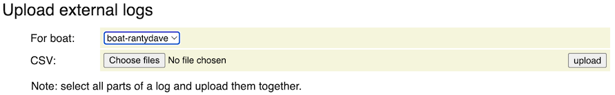
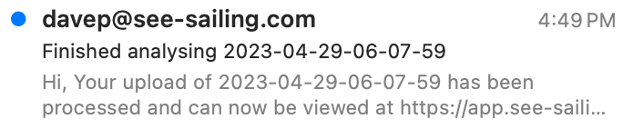

See Sailing is currently compatible with log files produced by the B&G Hercules, B&G Triton, Expedition and Yacht Devices. Mail me if you have a different system you'd like to see supported.
Note that calculations internal to See Sailing are performed differently for B&G, Expedition and NMEA devices (which includes CANBoat and Yacht Devices). Performance data delivered by B&G is not recalculated before display/use on See Sailing - so numbers such as VMG are as-delivered from your sailing processor. Expedition is treated as one big device which provides streams of data, and calculatations are performed internally in See Sailing. The CANBoat format shows up as a direct NMEA import complete with source maps and (again) calculations are performed internally.
There is a single 'tier' subscription that applies for a single boat with no additional usage charges. You have ninety days to ensure that See Sailing works for you before you'll be charged, and the hope is that any glitches or niggles can be sorted out by the end of that period.
Subscriptions are managed by Stripe and you start a new one by clicking here...
When you've done that an email will be sent with your login details and a link to your account page (something like https://app.see-sailing.com/u/yourname). You can use this page to change your username, password and the name of your boat and this is described in detail on the management documentation pages.
For B&G Hercules/Triton the sailing processor has to be configured to record data before you start sailing by connecting to the internal web interface. After sailing, these recordings will need to be downloaded off the sailing processor before they can be sent to see-sailing. For help with either configuration or downloading please reference either the user manual for Hercules or Triton Edge depending on which device you have. If they arrive as a zip file you will need to expand this to make .csv files for See Sailing.
For Expedition the log files are contained in the directory C:\ProgramData\Expedition\log.
For CANBoat the '.log' format can be imported directly. Note that this will
For Yacht Devices you must first convert their log files to the CANboat '.log' format. This can be done with the YDVRCONV utility.
First, go to your account page in See Sailing. If there is a "Login" link in the top right hand corner then use it to log in with your username and password, otherwise it should be showing your username along with a link to log out.
Your page will have a form to upload new recordings, it looks like this...
Click the 'Choose files' button and select the .csv file for the recording you want to upload. Hercules and Triton often break large recordings into smaller ones and you will need to select all the parts of the recording together. Don't worry about the order in which they are selected, See Sailing will sort them out for you. Similarly, Expedition can put more than one recording into a single file. In this case, See Sailing will find the individual recordings for you. In both cases we are currently limited to 100MB for a single upload. If this is a problem for you, please let me know.
Finally, click the "upload" button to send the recording to See Sailing for processing. This will take a few seconds, then the page will refresh with a notification to let you know it succeeded...
Shortly after, an email will arrive...
...with a link you can click to be taken to the web interface for that recording. Success!

Errors you may receive include...
Insufficient GPS data which means one of two things: either there is no GPS data in the recording, or the GPS data does not contain velocity information (speed and course over ground). Some GPS's are reluctant to provide velocity information while at dock and this is probably only something that occurs in short recordings.